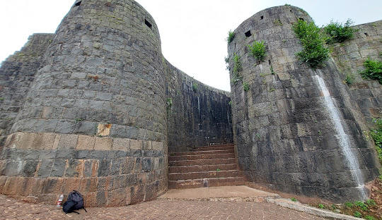
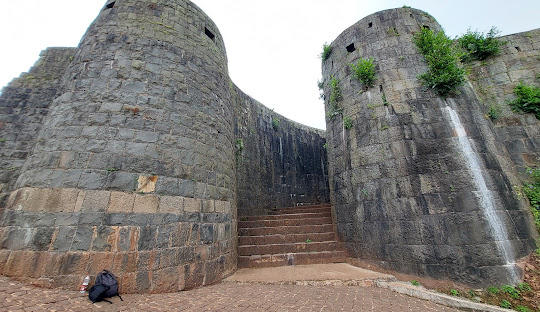
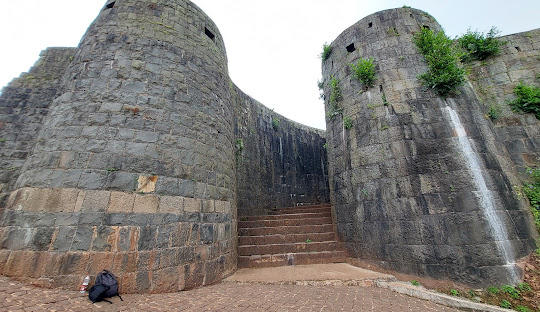

Rajhunsgad Fort
Yellurgad Fort (also known as Rajhansgad or Yellur Fort)
dominates Belagavi's skyline Location:QG4G+RHQ, Belagavi, Karnataka 590005

 


Yellurgad Fort (also known as Rajhansgad or Yellur Fort)
dominates Belagavi's skyline Location:QG4G+RHQ, Belagavi, Karnataka 590005

Yellur Fort, also known as Rajhunsgad, is a historic fort located on a hilltop near Belagavi. It was mainly built as a watchtower to keep an eye on enemy movements from Goa and Karwar. Due to its high elevation, soldiers could easily spot any approaching threats from miles away.
The fort is situated in Yellur village, which lies in a fertile region of the Western Ghats. Surrounding areas like Sulebhavi-Balekundri, Ambewadi, and Yellur are known for their rich agricultural produce, including paddy, lentils, vegetables, and pulses. The hill itself contains bauxite, a mineral used in making aluminum, which gives the soil a unique white shine.
Today, Yellur Fort is an interesting offbeat destination for travelers. Visitors can either hike up the hill to enjoy its beauty and history or drive up to the main entrance. The fort offers stunning views of the countryside and a glimpse into the region’s past.
History and Importance :
Yellur Fort has seen many battles and rulers over the centuries. It was closely linked to Belagavi Fort and played an important role in protecting the region.
Major Battles :
The fort was attacked three times:
Once by the Nawabs of Savanoor against the Peshwas.
Another time by Tipu Sultan’s army against the Peshwas.
A third time by Bhimgad Fort forces against Rajhunsgad defenders.
During British rule, around 100 soldiers were stationed here for security.
Smart Design for Protection :
The entrance is tricky—you have to take a turn before entering. This allowed soldiers to see anyone approaching from different angles.
The fort walls are strong and have peepholes for guards to watch over the surroundings.
There is a special binocular window where a soldier could see two different directions at the same time.
The fort has secret exit routes, small passageways that let soldiers escape without being noticed if the fort was attacked.
Legends and Mysteries :
One of the most fascinating stories about Yellur Fort is that it may have a hidden underground tunnel connecting it to Belagavi Fort. People believe this tunnel was used for secret movements during wars. Today, a bush-covered depression with loose stones is said to be its entrance, though it remains unexplored.
Main Attractions Inside the Fort
Grand Entrance – A cleverly designed doorway where guards could spot intruders easily.
Watchtower and Walls – Strong walls with peepholes and a special binocular window for better defense.
The Well – A deep well inside the fort, once used as a main water source. It has stone steps, arches, and a pulley system, now secured with an iron grill.
Shiva Temple – A small but sacred temple inside the fort, recently renovated.
Granary and Soldier Quarters – Ruins of a storage area and the remains of rooms where soldiers once stayed.
Perched atop a scenic hillock near Belagavi, Yellur Fort—also known as Rajhunsgad—stands as a silent sentinel of history. Once an essential watchtower, this fort played a crucial role in safeguarding the region by spotting and preventing enemy advances from Goa and Karwar. The fort’s elevated position offered a strategic advantage, allowing guards to detect approaching threats from miles away. Yellur village, where the fort is located, is part of a fertile plateau nestled in the Western Ghats. The surrounding areas of Sulebhavi-Balekundri, Ambewadi, and Yellur are known for their rich agricultural yield, producing paddy, lentils, vegetables, and pulses. The hill itself has a unique composition, with traces of bauxite—a key ore used in aluminum production—giving the soil a distinctive white shimmer. Today, Yellur Fort remains an offbeat yet fascinating destination for travelers, offering a mix of history, architecture, and breathtaking views of the countryside. Visitors can either hike up the hill, experiencing the fort’s historic charm firsthand, or take a road leading directly to its entrance.
The history of Yellur Fort is deeply intertwined with the legacy of Belagavi Fort. Over the centuries, it has witnessed multiple battles, serving as a crucial outpost for various rulers who sought to control the region.
1. Wars and Conflicts :
The fort withstood three significant wars:
A battle between the Nawabs of Savanoor and the Peshwas.
A conflict between Tipu Sultan’s forces and the Peshwas.
A struggle involving the officials of Bhimgad Fort and Rajhunsgad forces.
During British rule, around 100 soldiers were stationed here to defend the stronghold.
2. Strategic Design :
The fort’s entrance is designed in a way that requires visitors to take a turn before stepping inside. This ensured that guards could monitor any approaching individuals from multiple directions.
The strong outer walls, lined with watchpoints and small hidden exits, allowed defenders to escape in times of emergency.
A well-placed binocular window enabled guards to observe two opposite directions simultaneously.
3. Legends and Secrets :
There are stories about an underground tunnel connecting Yellur Fort to Belagavi Fort. Though the tunnel’s entrance is now covered by thick bushes and loose stones, many believe it once provided a hidden escape route.